Nassim Belabed
Je suis en 2e année de BUT Génie Électrique et Informatique Industrielle, parcours Électronique et systèmes embarqués, à l'IUT de Vélizy-Rambouillet (Université Paris-Saclay).
Ce qui me plaît, c'est le matériel : concevoir une carte, la fabriquer et la voir fonctionner. Je fabrique des PCB et des pièces imprimées en 3D au FabLab de l'IUT, et je mène des projets personnels autour de l'ESP32, comme un lecteur MP3 façon iPod. En parallèle, je me forme en autodidacte à l'intelligence artificielle (agents IA, LLM).
De janvier à avril 2027, je pars en échange au Cégep Édouard-Montpetit (Longueuil, Québec). À mon retour, je recherche un stage de 8 semaines minimum à partir de mi-juin 2027, puis une alternance en BUT 3 dès septembre 2027, en électronique, systèmes embarqués ou IA.
Projets à la une
Projets académiques
Les SAÉ (situations d'apprentissage et d'évaluation) que j'ai réalisées en BUT 1 et en BUT 2. Cliquez sur un projet pour voir sa fiche complète.
BUT 2 · Semestre 3
BUT 1 · Semestre 2
BUT 1 · Semestre 1
Projets personnels
Ce que je fais en dehors des cours, parce que j'aime construire des objets qui marchent vraiment.
iPod OK Computer Edition
Un iPod Classic refait de zéro sur ESP32-S3 : lecture MP3, pochettes, transfert de musique par WiFi.
Domostore
Projet de lycée : volet roulant connecté, piloté par Home Assistant et par un capteur de luminosité.
FabLab de l'IUT
Fabrication de PCB et d'impressions 3D pour mes projets et ceux des autres.
Expérience et engagements
Je n'ai pas encore fait de stage en entreprise. Voici les expériences qui m'ont appris à travailler avec les autres et à prendre des responsabilités.
🏹Encadrant fédéral de tir à l'arc · AS Poissy Tir à l'arc
Depuis septembre 2025 · bénévolat · Diplômé encadrant fédéral (FFTA)
- J'enseigne les bases techniques et les règles de sécurité du tir à l'arc à un groupe d'environ 10 archers en école de tir (niveau 1).
- J'encadre un groupe de plus de 10 adultes et adolescents en développement et je suis leur progression.
Ce que j'en retire pour l'ingénierie : expliquer simplement quelque chose de technique, faire respecter des règles de sécurité sans exception, préparer une séance à l'avance et l'adapter en direct selon le groupe. C'est la même rigueur que pour préparer un protocole de test ou présenter un projet à l'oral.
Je pratique aussi en compétition (catégorie U21, arc classique) depuis 9 ans : champion des Yvelines Beursault U21 en 2026.
📰Autres engagements au lycée
- Création et gestion de la rubrique Jeux vidéo et esport du journal du lycée Charles de Gaulle (Poissy) : écrire pour un public large et tenir un rythme de publication.
- Élu lycéen : éco-délégué et membre du conseil d'administration de la Maison des lycéens.
🍁À venir
- Janvier à avril 2027 : semestre d'échange au Cégep Édouard-Montpetit (Longueuil, Québec).
- À partir de mi-juin 2027 : stage de 8 semaines minimum en électronique, systèmes embarqués ou IA.
- Septembre 2027 : alternance en BUT 3.
CV
Mon CV à jour, au format PDF.
Formation
BUT Génie Électrique et Informatique Industrielle, parcours Électronique et systèmes embarqués
IUT de Vélizy-Rambouillet, UVSQ / Université Paris-Saclay · 2025-2028 · échange au S4 au Cégep Édouard-Montpetit (Québec)
Baccalauréat général, spécialités mathématiques et physique-chimie, option mathématiques expertes
Lycée Charles de Gaulle, Poissy · 2025
Compétences techniques
Systèmes embarqués
ESP32 / ESP32-S3, Arduino, microcontrôleur 8051 en C, bus I2C, SPI, I2S, CAN
Électronique
Analogique et numérique, conception de PCB (KiCad), simulation LTspice, PSim, PSpice
Logique programmable
FPGA Xilinx (Basys 2, Spartan-3E), VHDL, ISE WebPack
Automatisme
Automates Schneider, Grafcet, Ladder, régulation PID
Programmation
C, C++, Python, Matlab, Scilab, LabVIEW, Git
CAO et fabrication
Fusion 360, SolidWorks, CadQuery, impression 3D, gravure de PCB
Langues
Français : langue maternelle · Anglais : niveau B1
Contact et réseaux
Pour un stage, une alternance ou simplement échanger sur un projet.
Mesure de distance par ultrasons
Concevoir une chaîne d'acquisition complète, du transducteur ultrasonore jusqu'à un signal exploitable, en vue d'un système de positionnement en 2D.
1La technologie mise en œuvre
La télémétrie par ultrasons repose sur le temps de vol : on envoie une courte salve d'ultrasons et on mesure le temps qu'elle met pour arriver. Dans notre montage, l'émetteur et le récepteur sont face à face, donc t = d / v, avec v ≈ 340 m/s dans l'air, soit environ 2,94 ms par mètre.
On retrouve cette technologie dans les radars de recul des voitures, la détection d'obstacles des robots et des drones, la mesure de niveau dans les cuves industrielles ou encore les sonars.
2Cahier des charges et objectifs
- Générer un signal porteur à 40 kHz, la fréquence de résonance du transducteur MA40S4S.
- Émettre ce signal par salves : en émission continue, on ne peut pas savoir quand l'onde est partie, donc on ne peut pas mesurer de temps de vol.
- Côté récepteur : amplifier le signal reçu, détecter son front et le remettre au niveau 0/5 V.
- Concevoir les cartes émetteur et récepteur sous KiCad, puis les fabriquer.
- Rendre les livrables intermédiaires puis le rapport final.
3Fonctionnement
Émetteur : deux NE555 en astable, alimentés en +5 V, avec f = 1,44 / ((RA + 2RB) · C).
- U1 commande les salves (570 Hz mesuré). Sa sortie va sur le RESET de U2.
- U2 génère la porteuse à 40 kHz envoyée au transducteur. Il n'oscille que quand U1 est à 1, ce qui découpe la porteuse en salves.
Récepteur : un TL082 alimenté en ±5 V et un transistor.
- U3A : amplificateur différentiel, G = R2 / R12 = 47 k / 1 k = 47.
- U3B : comparateur qui détecte le front, seuil ≈ 0,45 V (pont R14 / R17).
- Q1 (BC337) : remet le signal au niveau 0/5 V (sortie sur le collecteur, signal inversé).
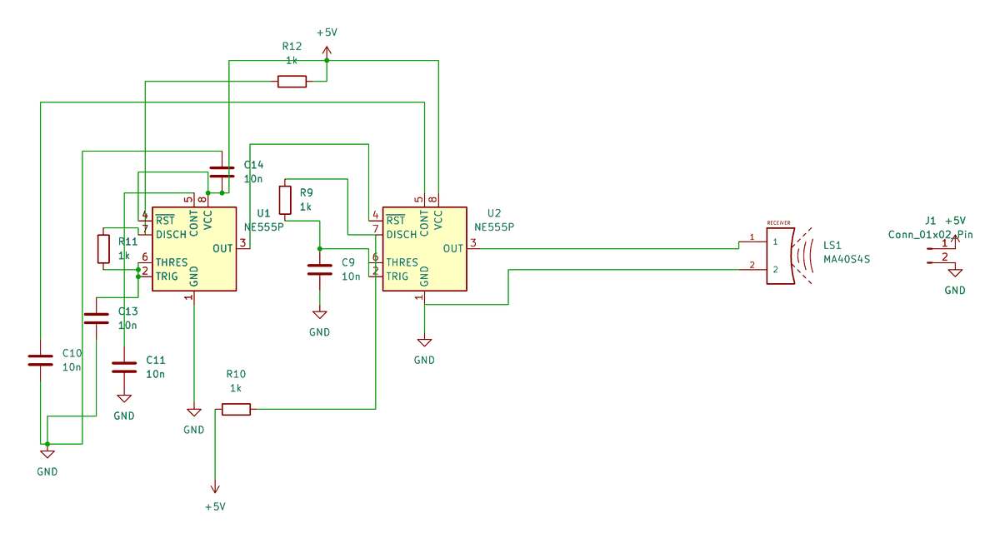
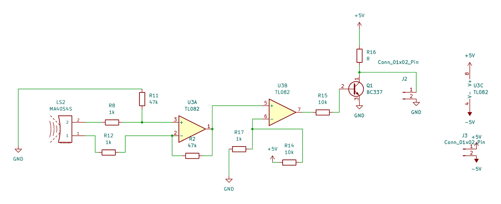
4Résultats obtenus
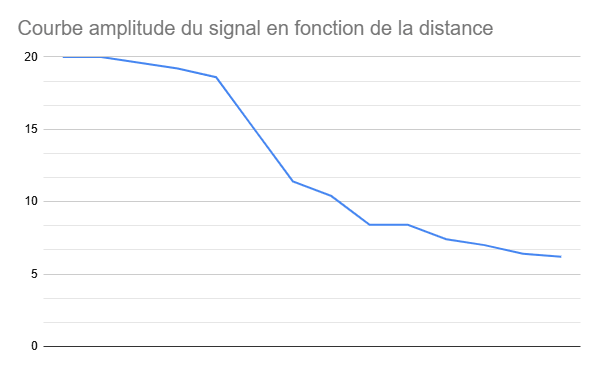
Amplitude en sortie du 1er étage (U3A) selon la distance :
| Distance (cm) | 1 | 3 | 5 | 6 | 7 | 9 | 11 | 14 |
|---|---|---|---|---|---|---|---|---|
| Amplitude (V) | 20 | 19,6 | 18,6 | 15 | 11,4 | 8,4 | 7,4 | 6,2 |
L'amplitude baisse avec la distance, et pas de façon linéaire : à partir de 7 cm, amplitude × distance ≈ 80 V·cm, donc elle décroît en 1/d. À 1 m, on estime le signal à environ 0,8 V : c'est trop faible pour la détection de front, d'où le besoin d'un 2e étage d'amplification.
Problèmes rencontrés et solutions :
- Faux contacts sur la plaque d'essai (Labdec) pendant les essais.
- Premier PCB émetteur sans plan de masse : la carte double face a été gravée sans plan de masse (un oubli), puis corrigée.
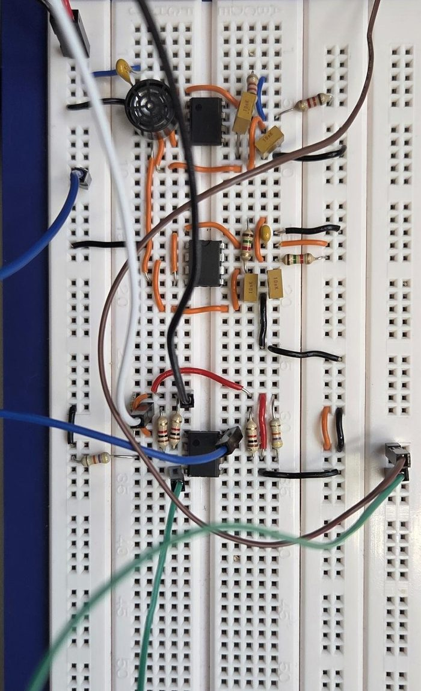
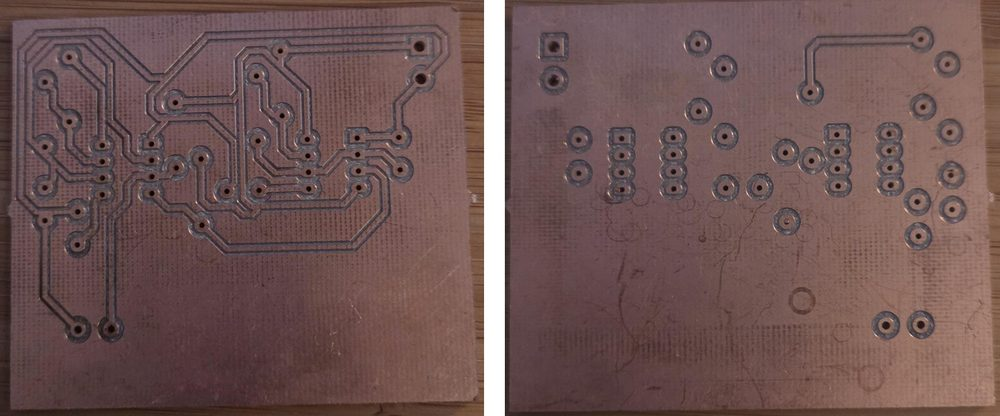
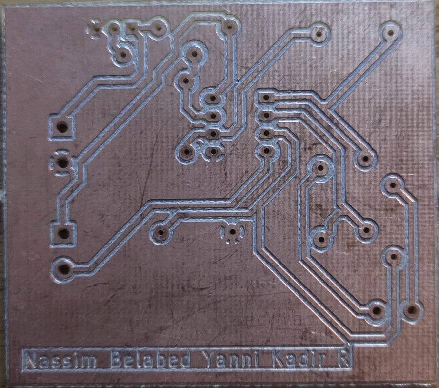
5Compétences techniques mises en œuvre
- Dimensionnement de montages astables à NE555 (fréquence de la porteuse, fréquence des salves).
- Conditionnement d'un signal faible : amplificateur différentiel, comparateur à seuil, mise à niveau logique par transistor.
- Saisie de schéma et routage sous KiCad, fabrication de PCB double face.
- Mesures à l'oscilloscope et relevé de l'amplitude en fonction de la distance, puis analyse de la courbe.
- Notions de chaîne d'acquisition : capteur, conditionnement, conversion analogique-numérique, échantillonnage (théorème de Shannon, filtre anti-repliement).
6Compétences transverses
- Respect d'un planning de livrables intermédiaires (comptes rendus et schémas rendus à chaque étape).
- Travail en binôme avec Yanni Kadir : on a tout fait à deux, de la conception aux mesures et à la rédaction des comptes rendus, sans se partager les tâches.
L'oscillo bot · Rencontres Robotiques de Cachan
Un robot autonome de suivi de ligne, conçu en équipe pour la compétition nationale des IUT GEII à Cachan (11 au 13 juin 2026).
1Cahier des charges et objectifs
Le robot doit suivre une ligne sur une piste et enchaîner des missions imposées : compter des marques au sol, s'arrêter au bon endroit, faire demi-tour, franchir des zones sans ligne, le tout le plus vite possible.
- Suivi de ligne précis à vitesse élevée.
- Détection et comptage des traits latéraux, à gauche et à droite.
- Enchaînement automatique des actions propres à chaque mission.
- Fonctionnement sur piste noire sur fond blanc, ou l'inverse.
2Ce que fait le robot
| Élément | Choix |
|---|---|
| Carte | Arduino Mega |
| Capteurs | Barrette infrarouge Pololu QTR-8RC (8 capteurs) |
| Motorisation | 2 moteurs à courant continu commandés en MLI par un pont en H L298N |
| Commande | Régulation PID (proportionnel + dérivé) sur la position de la ligne |
Le programme décrit chaque parcours sous forme d'une « partition » : une liste d'étapes (nombre de traits à compter, côté, action, sens de rotation, temporisation, vitesse du tronçon) que le robot exécute dans l'ordre. Ajouter une mission revient à écrire une nouvelle partition, sans toucher au cœur du programme.
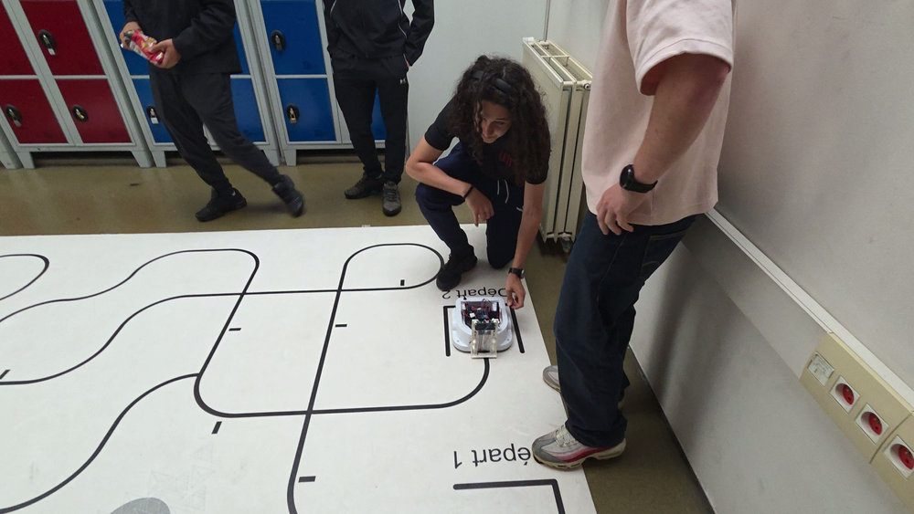
3Résultats obtenus
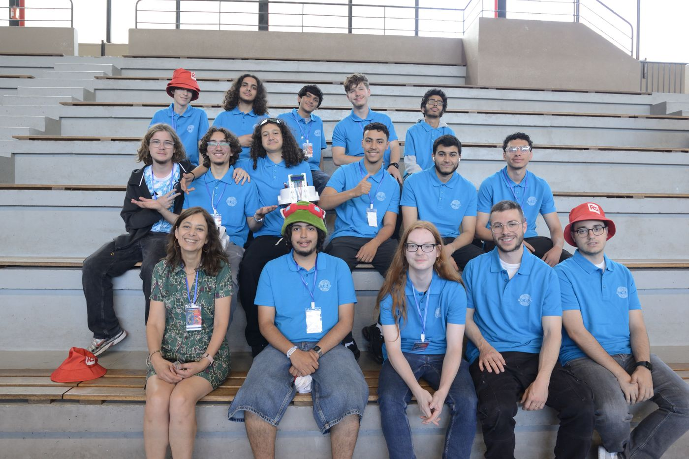
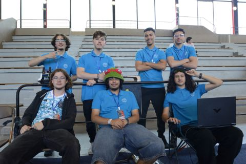
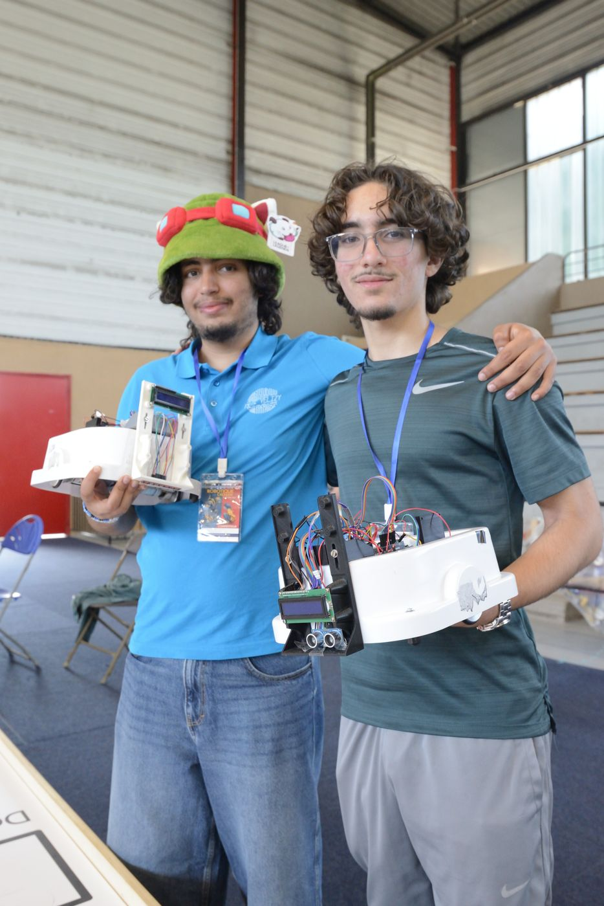
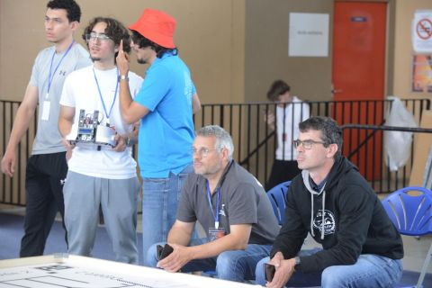
Principales difficultés et solutions :
- Un trait compté deux fois : un trait n'est validé qu'après plusieurs lectures consécutives au-dessus du seuil, puis plus rien n'est compté tant que le capteur n'est pas sorti du trait.
- Pistes inversées (ligne blanche sur fond noir) : le robot détecte automatiquement le type de piste et adapte sa lecture.
- Changements de vitesse : un même réglage PID ne convient pas à toutes les vitesses, donc les coefficients sont adaptés à chaque tronçon.
- Sorties de piste : arrêt de sécurité si la ligne est perdue trop longtemps, et limitation de la correction.
- Une version par mission : 11 versions du programme écrites du 8 au 13 juin 2026, et des réglages faits en direct sur la piste pendant la compétition.
4Compétences techniques mises en œuvre
- Calibration d'une barrette de capteurs infrarouges et choix des seuils de détection.
- Réglage d'un correcteur PID par essais sur piste.
- Commande de moteurs à courant continu en MLI via un pont en H.
- Programmation en C/C++ (Arduino) avec une machine à états.
- Méthode de test : un programme de « reconnaissance » pour compter les traits de la piste, puis la version de course réglée avec ce nombre.
- Ma partie : presque toute la partie matérielle (carte Arduino, capteurs, roues), et j'ai aidé le reste de l'équipe à prendre en main ces outils. On a écrit ensemble les premiers programmes de test du robot.
- Essai d'un suivi du robot en Wi-Fi, abandonné parce que le Wi-Fi entrait en conflit avec la gestion des moteurs.
5Compétences transverses
- Travail en équipe avec Yanni Kadir et Gerald Binet : partage du code et corrections faites ensemble.
- Gestion de la pression : modifier et retester le programme pendant les 3 jours de compétition.
- Communication : site web de présentation du projet avec les vidéos des missions (voir le site) et post LinkedIn. J'ai fait le site seul.
Escape Race
Construire un robot mobile autonome, majoritairement à partir de matériaux recyclés, capable de sortir le plus vite possible d'une zone encombrée d'obstacles.
1Cahier des charges et objectifs
- Robot entièrement autonome, sans télécommande.
- Structure réalisée principalement avec des matériaux recyclés.
- Détecter et éviter les obstacles et les murs d'un espace clos.
- Sortir de la zone le plus rapidement possible.
2Fonctionnement du robot
Deux roues entraînées par des servomoteurs à rotation continue, deux capteurs à ultrasons (un devant, un sur le côté gauche) et une carte Arduino. Le programme tourne en boucle sur trois cas, par ordre de priorité :
| Situation | Réaction |
|---|---|
| Obstacle à moins de 20 cm devant | Arrêt, marche arrière, puis rotation sur place pour repartir dans une autre direction |
| Mur à moins de 15 cm à gauche | La roue droite ralentit brièvement pour corriger la trajectoire, sans s'arrêter |
| Voie libre | Les deux roues à pleine vitesse |
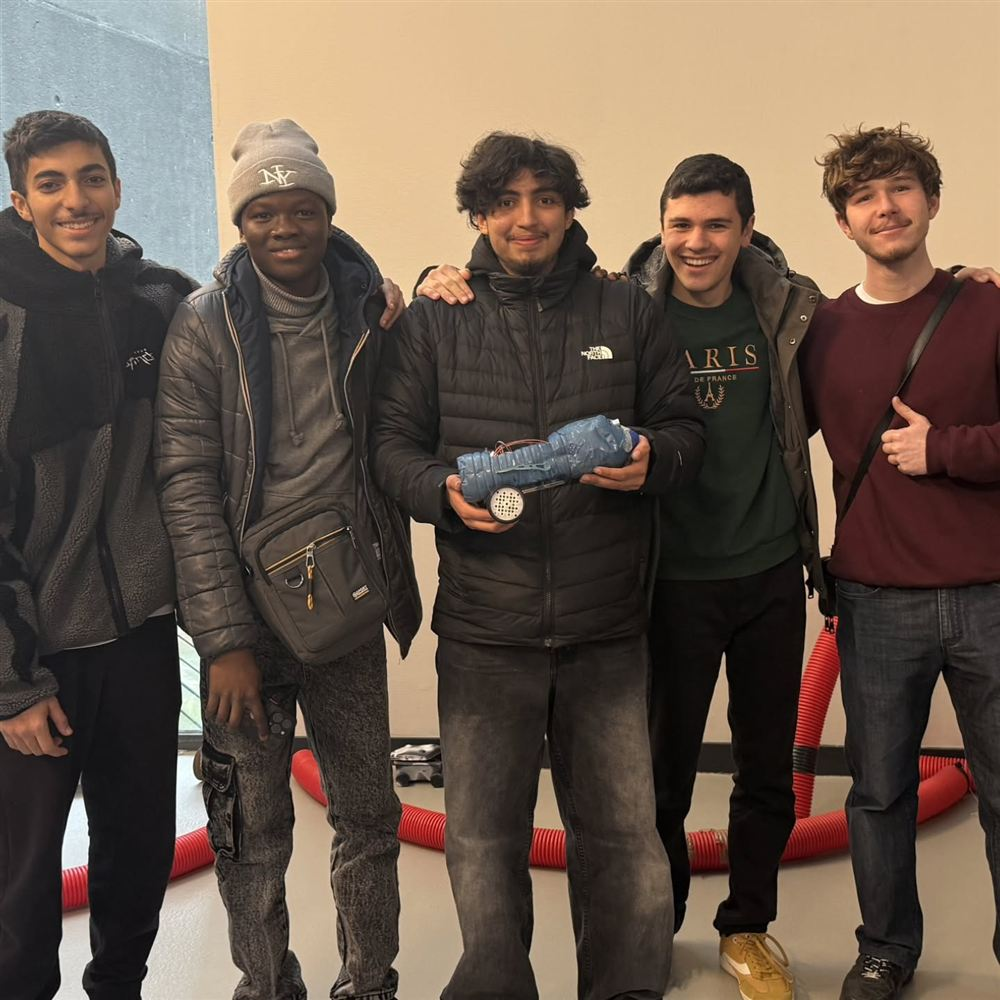
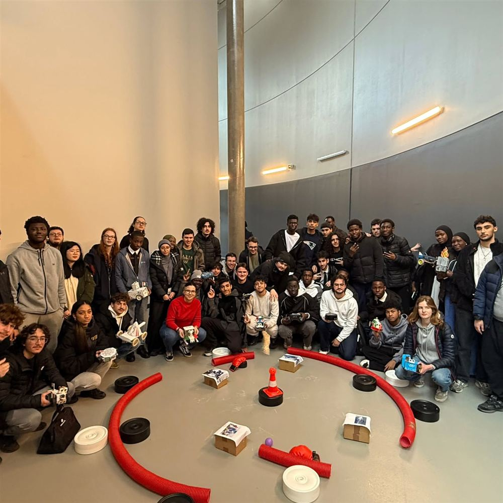
3Résultats obtenus
Choix techniques du programme :
- La mesure d'écho est limitée à 20 ms : sans écho, le programme ne reste pas bloqué et continue de rouler.
- Corriger la trajectoire le long du mur sans s'arrêter fait gagner du temps par rapport à un arrêt systématique.
- Une LED s'allume quand la tension d'alimentation de l'Arduino passe sous 4,7 V, mesurée en interne sans composant ajouté : on voit tout de suite quand l'alimentation faiblit.
difficultés rencontrées pendant la construction et solutions
4Compétences techniques mises en œuvre
- Mesure de distance par ultrasons : impulsion de déclenchement de 10 µs, mesure de la durée de l'écho, conversion en centimètres.
- Commande de servomoteurs à rotation continue (sens et vitesse, roues montées en miroir).
- Programmation Arduino (C/C++).
- Ma partie : toute la partie technique du robot, de la conception à la programmation, en passant par l'électronique et l'intégration.
5Compétences transverses
- Travail en équipe de 4.
- Faire avec des moyens limités : réutiliser des matériaux de récupération.
- répartition des tâches, présentation du projet
Code du robot sur GitHub →
Vidéo du projet (post LinkedIn d'Abdou Ndiaye) →
Thermomètre numérique
Étude et réalisation complète d'un thermomètre intérieur autonome à afficheurs 7 segments, en technologie traversante.
1Cahier des charges et objectifs
- Mesurer la température ambiante de 0 °C à 60 °C, au degré près.
- Afficher la valeur de façon stable sur des afficheurs 7 segments.
- Fonctionner sur une pile 9 V, donc limiter la consommation.
- Produire l'analyse fonctionnelle du système.
- Réaliser un prototype en composants traversants.
2Fonctionnement
Le signal passe par cinq étages, du capteur jusqu'à l'affichage :
| Étage | Composants | Rôle |
|---|---|---|
| Acquisition | Capteur LM335 | Donne une tension proportionnelle à la température absolue |
| Conditionnement | 3 AOP (LM324) + diode Zener | Amplificateur soustracteur : ramène 2,73 V – 3,33 V vers 0 V – 5 V |
| Numérisation | CAN ADC0804, horloge par NE555 | Convertit 0 V – 5 V en un mot de 8 bits (0 à 255) |
| Transcodage | EEPROM AT28C64B | Table de conversion : l'octet du CAN sert d'adresse, la mémoire renvoie les codes BCD |
| Affichage | 2 décodeurs HCT4511 + afficheurs à cathode commune | BCD vers 7 segments, avec des résistances qui limitent le courant pour préserver la pile |
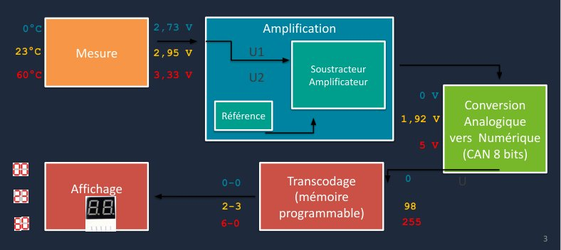
3Résultats obtenus
Principale difficulté et solution :
- Le décalage du capteur : à 0 °C (273,15 K), le LM335 sort déjà 2,73 V. Pour afficher 0, on retire cette tension avec un amplificateur soustracteur, dont la référence est fixée par une diode Zener.
Pour aller plus loin : réaliser un circuit imprimé (PCB) pour rendre le thermomètre plus compact.
4Compétences techniques
- Chaîne d'acquisition complète : capteur, conditionnement, conversion analogique-numérique, affichage.
- Lecture de datasheets et dimensionnement des composants (gain de l'amplificateur, résistances de limitation).
- Programmation d'une mémoire EEPROM utilisée comme table de conversion.
- Tests du prototype : linéarité du capteur vérifiée, gain de l'amplificateur validé par la mesure, table de conversion fonctionnelle, affichage stable et lisible.
5Compétences transverses
- Montage par étapes : chaque étage câblé et testé avant de passer au suivant.
- Présentation du projet sous forme de diaporama.
- organisation du binôme, répartition des tâches
iPod OK Computer Edition
Un iPod Classic refait de zéro : lecteur MP3 sur carte SD, écran couleur 2,4", DAC audio et 6 boutons, pour environ 33 € de composants. Firmware, PCB et boîtier conçus de bout en bout.
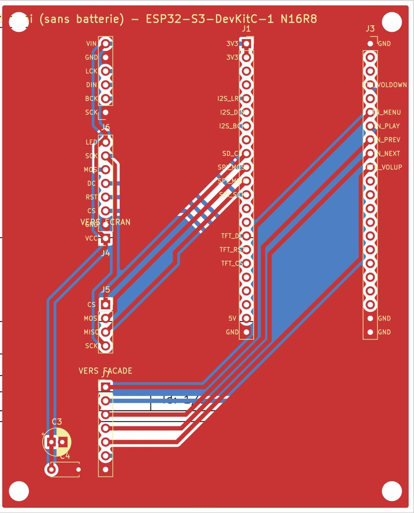
1Objectifs
- Lire des MP3 depuis une carte microSD avec une interface façon iPod : Artistes, Albums, Morceaux, Lecture en cours avec la pochette.
- Une vraie sortie audio de qualité via un DAC externe.
- Ajouter de la musique sans retirer la carte SD.
- À terme, un objet portable sur batterie, dans son propre boîtier.
2Architecture matérielle
| Composant | Rôle |
|---|---|
| ESP32-S3-DevKitC-1 N16R8 | Microcontrôleur, 16 Mo de flash, 8 Mo de PSRAM |
| Écran ILI9341 2,4" (SPI) | Affichage 240 × 320, avec lecteur microSD intégré sur le même bus SPI |
| DAC PCM5102A (I2S) | Conversion numérique-analogique, sortie jack |
| 6 boutons poussoirs | Navigation (pull-up interne, anti-rebond logiciel) |
3Résultats obtenus
Difficultés et solutions :
- Écran et carte SD sur le même bus SPI : l'écran ne libérait pas sa ligne de données et bloquait la SD. Solution : ne pas câbler le MISO de l'écran et toujours relâcher une puce avant d'activer l'autre.
- Broches interdites : avec la PSRAM octale du N16R8, les GPIO 26 à 37 sont réservés, donc j'ai refait tout le brochage.
- Plantage de la bibliothèque audio sur certains MP3 (division par zéro) : j'ai corrigé la bibliothèque et gardé une copie modifiée dans le projet.
- Le WiFi perturbait le son : il n'est allumé que dans le menu de transfert.
- Saturation du DAC au-delà d'un certain volume : volume plafonné.
Suite : corriger le PCB avant fabrication, ajouter la batterie LiPo et son chargeur.
4Compétences mises en œuvre
- Bus SPI, I2S, gestion de la mémoire PSRAM sur ESP32-S3.
- Conception de PCB en deux cartes (logique et façade boutons) avec leurs fichiers de fabrication.
- CAO 3D d'un boîtier à partir des cotes des cartes.
- Méthode de test : un programme de test dédié à chaque bloc (carte, SD, tags, écran, audio, boutons) avant de tout assembler.
- Autonomie, recherche de documentation, gestion de version avec Git.
Domostore
Un volet roulant connecté, commandé à distance depuis Home Assistant, qui s'ouvre et se ferme tout seul selon la luminosité.
1Objectifs
- Piloter un volet roulant à distance (ouvrir, fermer, stop).
- L'automatiser selon la luminosité : ouverture sous 1 000 lux, fermeture au-dessus de 20 000 lux.
- L'intégrer dans un système domotique (Home Assistant).
2Ma partie
J'ai réalisé seul toute la partie embarquée et domotique, ainsi que les impressions 3D. J'ai aussi aidé l'équipe sur la CAO, faite sous SolidWorks. Le prototype a été fabriqué au FabLab du lycée.
| Élément | Choix |
|---|---|
| Microcontrôleur | ESP32, configuré avec ESPHome |
| Moteur | Servomoteur FT90MR en rotation continue |
| Capteur | Luxmètre BH1750 en I2C |
| Supervision | Home Assistant, mises à jour sans fil (OTA) |
En équipe, on a aussi mesuré les pertes thermiques à la caméra thermique et comparé le coût du volet à celui des produits concurrents.
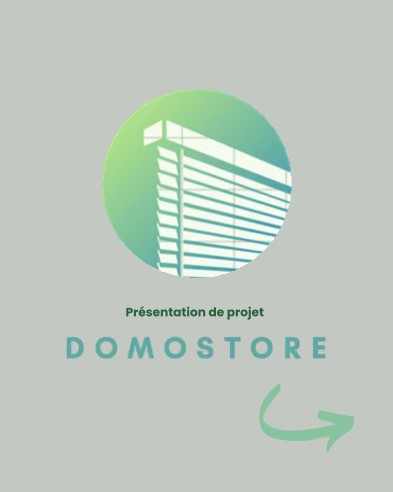
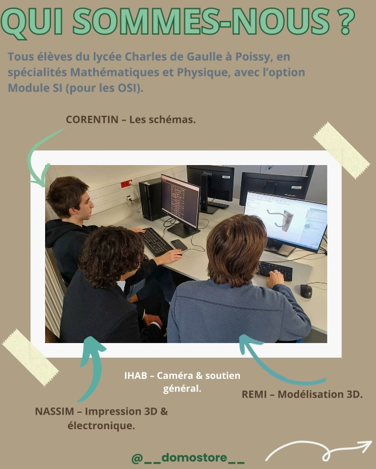
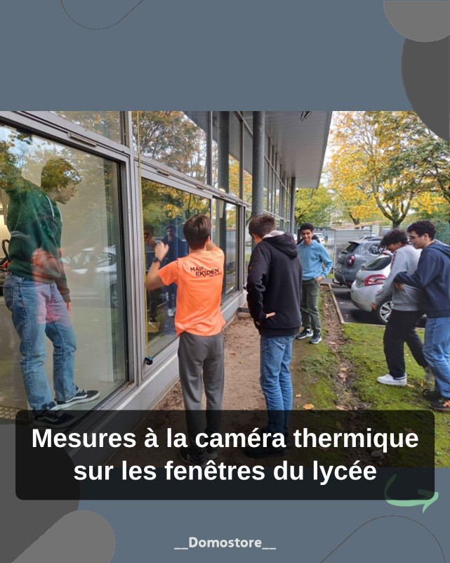
3Résultats et améliorations
En reprenant le projet en 2026 pour le publier, la configuration a été corrigée : l'automatisme relançait le moteur toutes les minutes tant que la luminosité restait dans la même zone. Une commande n'est maintenant envoyée que si le volet n'est pas déjà dans la bonne position, et un nouvel ordre remplace proprement celui en cours.
4Compétences mises en œuvre
- Programmation d'un ESP32, bus I2C, commande d'un servomoteur en MLI.
- Domotique : ESPHome, Home Assistant.
- Impression 3D, CAO SolidWorks.
- Travail en équipe sur un projet long, présentation devant un jury.
FabLab de l'IUT
Le FabLab est l'endroit où je passe le plus de temps à l'IUT en dehors des cours.
- Fabrication de nombreux PCB sur la graveuse LPKF ProtoMat, ce qui impose ses règles de conception (simple face, pistes de 0,8 mm minimum).
- Impressions 3D pour mes projets et ceux d'autres étudiants.
- Aide au fonctionnement du FabLab quand je peux.